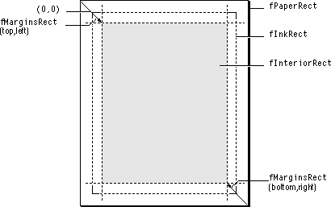

Printing
MacApp applications use view objects both to display documents and to print them. You associate a print handler with a view and the print handler converts the view's drawing instructions into printable output. Print-handler objects also manage the page setup and print options dialogs, and handle printing-related menu commands, including Print, Print One, and Show Page Breaks.To add customized page layout for your documents, you subclass one of the print-handling classes provided by MacApp and override the appropriate methods, as described in "Behind the Scenes" on page 232. For additional information on printing, see Chapter 23, "Working With Printing."
Print-Handling Classes
Printing in MacApp is managed by associating a print-handler object with a view object. The view object draws the view and the print handler converts the drawn image into printable output.MacApp provides two print-handling classes:
Because print-handling classes descend from MacApp's
TPrintHandler- The
TPrintHandlerclass defines the minimal print-handler interface.TStdPrintHandler- The
TStdPrintHandlerclass, a subclass ofTPrintHandler, adds capabilities to print a view and handle the Page Setup and Print menu commands.TBehaviorclass, they can handle events, including menu commands. When the user selects the Print command from the File menu, the print handler takes care of all the details of printing, including spooling and communicating with the Macintosh Print Manager. The print-handling object calls drawing methods in its associated view object, then directs the drawn output to the printer.Since a print handler is always associated with a view, it is usually created at the same time as its view, in the
DoMakeViewsmethod of a document object. The print handler prints the view and all of the associated subviews, so you only need to create one print handler to print an entire view hierarchy.A great deal of flexibility is built into the standard print handler, so you may not need to define a print-handling subclass. If you do need to provide custom printing, you normally do so by overriding methods of
TStdPrintHandler. Less commonly, you may define a subclass of the simplerTPrintHandlerclass.Recordable Printing
MacApp'sTPrintCommandclass supports recordable printing. You initialize a print command by passing it a command number and a reference to a print-handler object. The print command'sDoItmethod calls theMakeAppleEventmethod creates an Apple event to describe the printing operation. If the print handler has a document object reference, the Apple event's specified object refers to the document; otherwise, it refers to the window containing the print handler's view.Creating Views for Displaying and Printing
When you create a window and its full view hierarchy by callingNewTemplateWindow(page 217), you can use the window for displaying as well as printing.The situation is slightly different when a user prints your application's documents from the Finder and the application is launched to do the printing. Since MacApp printing is based on views, you can create a view to print the document without the additional overhead of creating a window. To create a view hierarchy for printing without also creating a window, you call the
DoCreateViewsmethod instead of theNewTemplateWindowmethod.Behind the Scenes
Printing is a complicated process that includes page setup, page printing, maintenance of page description areas, and interaction with the Macintosh Print Manager. MacApp can handle all of these operations, but if you want to customize your printing support, you'll want to know more about how MacApp implements printing.Initialization
Your application calls theInitUPrintingmethod to initialize printing.InitUPrintingcreates a printer object of typeTMacPrintPrinter(a subclass ofTPrinter) and stores a reference to it in the global variablegDefaultPrinter. MacApp's global printer object works with theCInMacPrintprint utility class to optimize performance by minimizing calls to the printer driver.The
TPrinterclass is a generic superclass that encapsulates a printer driver. TheTMacPrintPrintersubclass works with normal (Macintosh Print Manager) printing. In the future, additional classes may provide drivers to support QuickDraw GX or other technologies.The
TPrintInfoclass encapsulates a print info handle for printing with the Macintosh Print Manager. Again, a similar class (though not necessarily with a common superclass) may be added in the future to encapsulate aGXJobinforecord.In addition to preparing the way for future compatibility with QuickDraw GX and minimizing calls to the printer driver, the
TPrinter,TMacPrintPrinter, andTPrintInfoclasses improve performance by caching information such as page size, rotation, resolution, and so on.Page Setup
TheTStdPrintHandlerclass handles the Page Setup menu command and the page setup dialog. To make changes to the page setup dialog undoable,TStdPrintHandlercreates aTPrintStyleChangeCommandobject when the user clicks OK in the page setup dialog box. TheDoItmethod of this class sends information to the Macintosh Print Manager to configure the printer for the specified setup.Different Setups Required for Print Commands
A user can print a document directly by choosing the application's Print or Print One command from the File menu. A user can also select an application document in the Finder and choose the Print menu command, causing the Finder to send the application a Print Documents event. The application may also receive a Print event from a script. In each case, MacApp calls theDoMenuCommandmethod of the print handler for the view to be printed, or of aTPrintMenuBehaviorobject attached to the document to be printed. Each of theseDoMenuCommandmethods calls theDoPrintCommandmethod of the print-handler object, which handles each case in a slightly different manner:
- Print. This menu command is handled by the standard print handler's
DoPrintCommandmethod. Before posting aTPrintCommandobject to print the document,DoPrintCommandcalls thePoseJobDialogmethod of the handler to gather print job information by displaying the printer job dialog box.- Print One. This menu command is also handled by the standard print handler's
DoPrintCommandmethod. No dialog box is displayed--the print job information is set up by reusing information from the previous job handled by the print handler; all pages are printed. ATPrintCommandis posted to print the document.- Print event. When a Print event specifies a document object, the event is dispatched to the document's
DoScriptCommandmethod, which in turn calls theDoAEPrintmethod. In theTDocumentclass,DoAEPrintcalls the document'sHandleMenuCommandmethod, specifying eithercPrintorcPrintOne, which leads to the same processing described above for Print and Print One.- Finder printing. The Print Documents event from the Finder is handled by the application object's
DoScriptCommandmethod. It creates aTPDocCommandobject to print the selected document or documents. The print handler'sDoPrintCommandmethod is called for each document to be printed.DoPrintCommandcalls the print handler'sThe page setup and job dialog boxes may be displayed before printing. These dialog boxes are controlled by two Boolean fields in
TStdPrintHandler:
fFinderSetup: Defaults toFALSE. If your application setsfFinderSetuptoTRUE, the print handler will display the page setup dialog before printing.fFinderJobDialog: Defaults toFALSE. Even iffFinderJobDialogisFALSE, the printer job dialog is displayed for the first document, and the information is reused for any remaining documents. If you setfFinderJobDialogtoTRUE, the printer job dialog will be displayed for each document printed.
- Note
- The Print Documents event is different from most Apple events, which don't put up a dialog box, in that it may cause MacApp to display a print dialog box. This is a result of the design of the Print event, not a limitation in MacApp.

Overview of a Print Job
TheTStdPrintHandlerobject controls printing. This method determines how many pages are to be printed, then enters a loop, calling theOneSubJobmethod as many times as necessary to completely print the view. If the printed output is not spooled, the entire job is accomplished with one subjob. However, for spooled output it may be necessary to use several subjobs, depending on the amount of disk space available.The
CInMacPrintobject. The constructor method of theCInMacPrintclass calls theOpenmethod of its printer. For theTMacPrintPrinterclass,Opencalls the Toolbox routinePrOpen, which opens the printer driver and printing resource file and initializes the Printing Manager.The print handler's
OneSubJobmethod calls the Toolbox routinePrOpenDoc, which initializes a graphics port to be used in subsequent calls to the Print Manager and makes it the active port. The print handler'sOneSubJobmethod calls thePrintPagemethod for each page in the subjob. After printing all of the pages, theOneSubJobmethod calls theFinishJobmethod of its printer object, which in turn calls the Toolbox routinePrCloseDoc. The destructor method for theCInMacPrintobject calls itsCleanupmethod. It in turn calls the Toolbox methodPrClose, which releases the Print Manager dialog box and other resources.
Page Printing
ThePrintPagemethod ofTStdPrintHandlerprints one page of a view by performing these steps:
- It calls its own
SetPagemethod to compute state information for the page.- It calls
fPrinter->StartPage, which in turn calls the Toolbox routinePrOpenPageto ready printing of the page.- It calls its own
FocusOnInteriormethod, which focuses on the portion of the view that represents the page. The area to be drawn is stored in the view'sfQDRectToClipTofield.- It calls its own
DrawPageInteriormethod, which then convertsfQDRectToClipToto view coordinates and passes them to theHandleDrawmethod of the view. TheHandleDrawmethod calls theDrawmethod to draw the specified portion of the view.- It calls its own
FocusOnBordermethod in anticipation of drawing page adornments that may be outside of the page interior.- It calls its own
AdornPagemethod, which draws any page adornments such as page numbers and borders.- It calls
fPrinter->FinishPage, which in turn calls the Toolbox routinePrClosePage.Page Definition Areas
The dimensions of the physical page are maintained by the print-handler object in fourVRectfields:Figure 8-8 shows the relationships between the page definition areas. The values are automatically recomputed whenever the user chooses a new printer. You can also call the
fInkRect- The printable part of the page, defined as a rectangle. Its upper-left corner is always
(0,0), and its lower-right corner is(y,x), whereyis the maximum printable page height, andxis the maximum printable page width.fPaperRect- The entire physical page, in the coordinate system of
fInkRect. The physical page is almost always larger than its printable part; thus, its upper-left corner usually has negative coordinate values, and its lower-right corner usually has coordinate values greater than those offInkRect.fInteriorRect- The part of the page in which the print handler draws its view image, again in the coordinate system of
fInkRect. (The value offInteriorRectis equal tofPaperRectminusfMarginsRect.)fMarginsRect- The top, left, bottom, and right paper margins. Although stored as a rectangle, these are really four values that define the distances from the physical page edges to the page interior, so the
fInteriorRectrectangle can be computed by addingfMarginsRecttofPaperRect. As a result, the upper-left point of thefMarginsRectrectangle is positive and the lower-right point is negative.InstallMarginsmethod of the print handler to modify the margin values, which also results in changing the value offInteriorRect, as described in "Installing New Margins," beginning on page 536.
Customizing the Page
TheTStdPrintHandlerclass implements several methods you can use to change the default page setup. You can modify the margin settings (described in "Recipe--Changing Default Margin Settings," beginning on page 535), customize the way in which the view is separated into page strips, or add custom handling of page breaks. Page strips and page breaks are described in the next section.Page Strips and Page Breaks
The extent of a view can be larger than one page, in which case it becomes necessary to divide it into pages for printing purposes. MacApp uses a model that divides a view into vertical or horizontal page strips. You can think of the view as being divided by horizontal and vertical lines, called page breaks, which produce a "checkerboard" of pages. A vertical column of these pages, one page wide, is called a vertical page strip. A horizontal row of these pages, one page high, is called a horizontal page strip.Most word-processing programs print a single vertical page strip, whereas many graphical applications print multiple page strips in both dimensions. The size of these page strips can be uniform or variable. Page strips of varying sizes are used when a different portion of a view is printed on different pages, for example, to ensure that page breaks occur on line boundaries.
Your application has a great deal of control over how pages are divided into strips and over what happens when a page break is generated. For example, MacApp's
TTEViewclass implements methods to facilitate mapping a view to pages and page strips. TheDoCalcViewPerPagemethod of theTTEViewclass determines the standard page strip size. Unless it is overridden, this method calls theCalcViewPerPagemethod of the print handler, which simply returns the size of the page interior.The number of page strips is determined by calling the
DoCalcPageStripsmethod of the view object. Unless overridden, this method calls theCalcPageStripsmethod of the print handler.CalcPageStripsuses one of two techniques to determine the number of page strips in each direction:To determine where a page break occurs, the
- If the page strip size is fixed, the number of strips is computed by dividing the height of the view by the height of the page strip and by dividing the width of the view by the width of the page strip.
- If the page strip size is variable,
CalcPageStripscomputes each page break, counting them as it goes.DoBreakFollowingmethod of the view object is called. This method returns the view coordinate at which the next page break occurs. Unless overridden, it calls theBreakFollowingmethod of the print handler, which simply adds the strip size to the last page break. To implement a view with variable-size page strips, you override theDoBreakFollowingmethod of your view class.If each page is the same size (in view coordinates), but the page size may need to be smaller than
fInteriorRect, it makes sense to override theDoCalcViewPerPagemethod. But if each page could have a different amount of view printed on it, you should overrideDoBreakFollowinginstead.Whenever a page break does occur, the print handler calls its own
EachBreakmethod. TheTStdPrintHandlerimplementation of this method computes the number of page strips for variable size strips and draws page breaks on
the screen.You can also call the
GetBreakCoordmethod of the print handler. This method returns the location in your view of an arbitrary page break. For fixed-size page strips, the computation is simple--the strip size is multiplied by the page break number. For variable-size page strips, the computation involves calculating all of the breaks up to the specified one.Screen Feedback
Many applications need to give the user screen feedback to show where page breaks occur, to display page numbers and headers, and so on.Screen feedback of page breaks is handled by cooperation between the print handler and the view. Recall that when the print handler is attached to the view, a print adorner is also added to the view. The feedback process starts when the view's
DrawContentsmethod is called:Although this seems like a circuitous route to provide feedback, it does provide maximum flexibility, because you can fine tune the screen feedback in either the print handler or the view.
- The
DrawContentsmethod of the view calls theHandleDrawmethod of
the view.- The view's
HandleDrawmethod manages drawing of the view's contents. After all subviews have had a chance to draw,HandleDrawcalls the view'sHighlightAdornersmethod.- The
HighlightAdornersmethod calls theDoHighlightSelectionmethod of each adorner. For the print adorner,DoHighlightSelectioncalls theDoDrawPrintFeedbackmethod of its view.- The view's
DoDrawPrintFeedbackmethod calls its print handler'sDrawPrintFeedbackmethod.- The print handler's
DrawPrintFeedbackmethod checks itsfShowBreaksinstance variable. If it isTRUE, the print handler calls theDoDrawPageBreakmethod of the view object.- The view's
DoDrawPageBreakmethod calls theDrawPageBreakmethod of the print handler.- The
DrawPageBreakmethod draws a 2-pixel-wide gray line along the page break in the view.If the
gDebugPrintingvariable isTRUE, the print handler provides debugging help by also drawing page numbers at the intersections of the page breaks.The user can control whether page breaks are displayed on the screen by choosing either the Show Page Breaks or Hide Page Breaks menu item. When one of these items is chosen, the print handler calls its
InvalPageFeedbackmethod. This method changes the screen feedback status and invalidates the view, which results in the view being redrawn with the new setting.